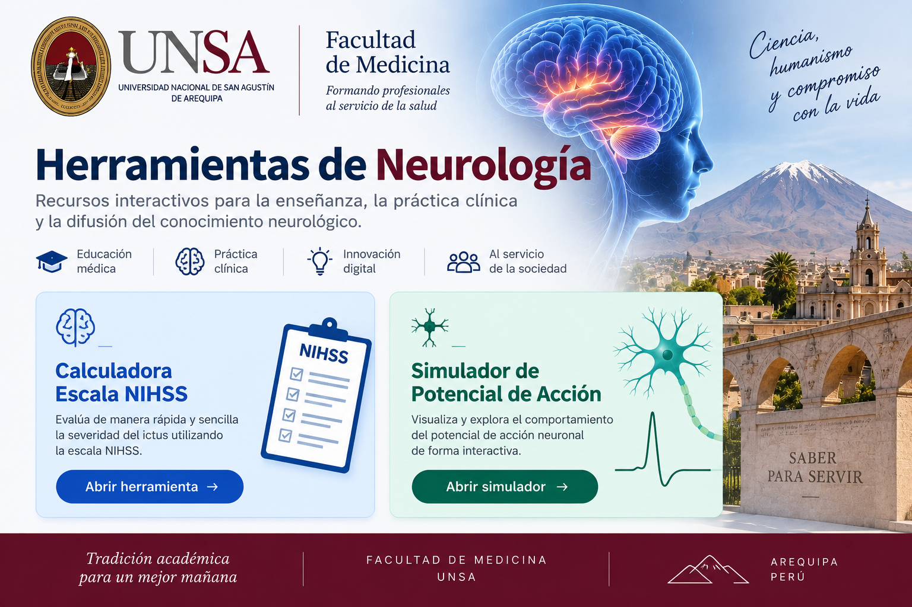

Recursos interactivos de Neurología
Facultad de Medicina · Universidad Nacional de San Agustín de Arequipa. Seleccione una de las áreas para continuar.
Taller de Muerte por Criterio Neurológico
Acceso a los simuladores de evaluación de prerrequisitos y examen físico para el taller clínico.
Ingresar al taller →Herramientas
Calculadoras y simuladores neurológicos para la práctica clínica y la docencia.
Ver herramientas →